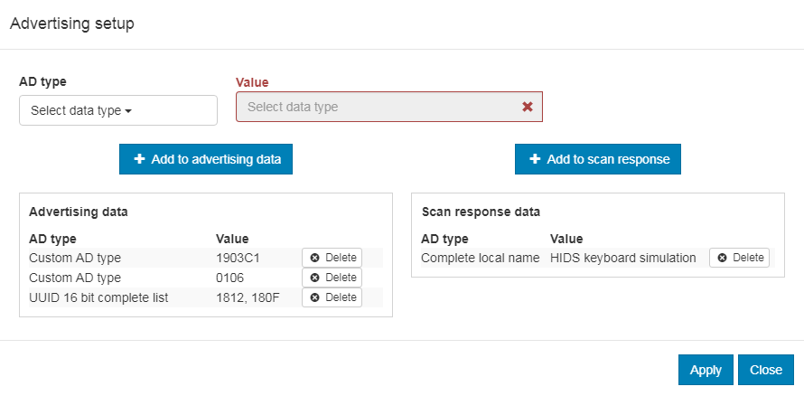

The Central HIDS sample demonstrates how to use the GATT Human Interface Device Service (HIDS) Client to interact with a HIDS server.
Basically, the sample simulates a computer that connects to a mouse or a keyboard.
When built for an _ns build target, the sample is configured to compile and run as a non-secure application with Cortex-M Security Extensions enabled.
Therefore, it automatically includes Trusted Firmware-M that prepares the required peripherals and secure services to be available for the application.
The sample scans available devices, searching for a HIDS server.
If any HIDS server is found, the sample connects to it and discovers all characteristics.
If any input reports are detected, the sample subscribes to them to receive notifications.
If any boot reports are detected, the behavior depends on if they are boot mouse reports or boot keyboard reports:
If a boot mouse report is detected, the sample subscribes to it.
If a boot keyboard report is detected, the sample subscribes to its input report, and the sample functionality of changing the CAPSLOCK LED is enabled (Button 1 and 3).
Toggle the CAPSLOCK LED on the connected keyboard using Write without response.
This function is available only if the connected keyboard is set to work in Boot Protocol Mode.
When pairing, press this button to confirm the passkey value that is printed on the COM listener to pair with the other device.
Button 2:
Switch between Boot Protocol Mode and Report Protocol Mode.
This function is available only if the connected peer supports the Protocol Mode Characteristic.
When pairing, press this button to reject the passkey value that is printed on the COM listener to prevent pairing with the other device.
Button 3:
Toggle the CAPSLOCK LED on the connected keyboard using Write with response.
This function is available only if the connected HID has boot keyboard reports.
It always writes CAPSLOCK information to the boot report, even if Report Protocol Mode is selected.
This sample can be found under samples/bluetooth/central_hids in the nRF Connect SDK folder structure.
When built as firmware image for the _ns build target, the sample has Cortex-M Security Extensions (CMSE) enabled and separates the firmware between Non-Secure Processing Environment (NSPE) and Secure Processing Environment (SPE).
Because of this, it automatically includes the Trusted Firmware-M (TF-M).
To read more about CMSE, see Processing environments.
After programming the sample to your development kit, you can test it either by connecting to another development kit that is running the Bluetooth: Peripheral HIDS keyboard sample, or by using nRF Connect for Desktop that emulates a HIDS server.
When connected, press Button 1 on both devices to confirm the passkey value used for bonding, or press Button 2 to reject it.
Wait until the HIDS keyboard is detected by the central.
All detected descriptors are listed.
In the terminal window, check for information similar to the following:
Press Button 1 and Button 2 one after another on the kit that runs the keyboard sample and observe the notification values in the terminal window.
See Bluetooth: Peripheral HIDS keyboard for the expected values:
Press Button 1 and Button 3 one after another on the Central HIDS kit and observe that LED 1 on the keyboard kit changes its state.
The following information is also displayed in the terminal window.
Open the Bluetooth Low Energy app and select the connected dongle that is used for communication.
Open the SERVER SETUP tab.
Click the dongle configuration and select Load setup.
Load the hids_keyboard.ncs file that is located under samples/bluetooth/central_hids in the nRF Connect SDK folder structure.
Click Apply to device.
Open the CONNECTION MAP tab.
Click the dongle configuration and select Advertising setup.
The current version of nRF Connect cannot store the advertising setup, so it must be configured manually.
See the following image for the required target configuration:

Advertising setup for HIDS keyboard simulator
Complete the following steps to configure the advertising setup:
Delete the default Complete local name from Advertising data.
Add a Custom AD type with AD type value set to 19 and Value set to 03c1.
This is the GAP Appearance advertising data.
Add a Custom AD type with AD type value set to 01 and Value set to 06.
This is the AD data with “General Discoverable” and “BR/EDR not supported” flags set.
Add a UUID 16 bit complete list with two comma-separated values: 1812 and 180F.
These are the values for HIDS and BAS.
Add a Complete local name of your choice to the Scan response data.
Click Apply and Close.
In the Adapter settings, choose Start advertising.
Wait until the kit that runs the Central HIDS sample connects.
All detected descriptors are listed.
Check for information similar to the following: